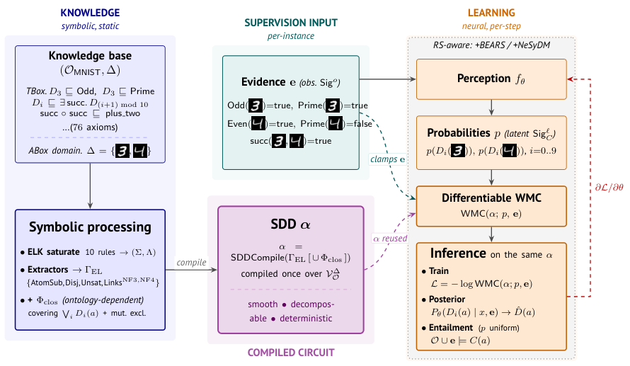

Termination, soundness, completeness, and polynomial-size proofs for the EL++-to-SDD compilation are mechanized and verified in Lean 4.
Abstract
The OWL 2 EL profile is used in some of the largest production ontologies, including the Gene Ontology and SNOMED CT. Existing neuro-symbolic (NeSy) learning methods accept propositional theories or Datalog, and reasoning-shortcut (RS) awareness has not been investigated in ontology settings. We present Moose, a method that compiles an $\mathcal{EL}^{++}$ TBox and finite ABox to a Sentential Decision Diagram (SDD). The SDD acts as a differentiable weighted-model-counting layer, and we add closure clauses outside the $\mathcal{EL}^{++}$ profile on declared exhaustive families to overcome the limited expressivity of $\mathcal{EL}^{++}$ under partial supervision. We show termination, soundness, completeness, and polynomial intermediate sizes, and validate the proofs in Lean. We then define the first formal partial-supervision latent-concept-learning task over an OWL EL ontology, i.e., learning per-individual classifiers for latent concepts from observed ABox literals, and evaluate Moose on MNIST-with-ontology and Pizzaïolo. Moose improves over propositional-NeSy, fuzzy-logic, and ontology embedding baselines, and presents the first reasoning-shortcut analysis in an OWL EL setting.
Problem
Neuro-symbolic knowledge-compilation methods accept propositional or Datalog theories but not OWL 2 EL ontologies directly, and reasoning-shortcut awareness has not been studied in ontology settings. There is no formally verified differentiable weighted-model-counting layer for an OWL profile.
Approach
Moose compiles an EL++ TBox and finite ABox to a Sentential Decision Diagram via ELK saturation, using it as a differentiable weighted-model-counting layer. Closure clauses outside EL++ are added on declared exhaustive families to handle limited expressivity under partial supervision. Correctness properties (verified SDD encoding, DISPONTE correspondence, SCC-compositional factorizations, polynomial intermediate sizes) are stated as theorems and mechanized in Lean 4, reusing a re-mechanized ELK soundness/completeness library.

Figure 1: End-to-end Moose workflow on \mathcal{O}_{\textsf{MNIST}} at \Delta{=}\{a,b\} . The TBox is compiled once via ELK saturation \to shape-aware extractors \to\Gamma_{\mathrm{EL}} ( +\Phi_{\mathrm{clos}} when supplied) \to SDD \alpha . The differentiable WMC layer evaluates \mathsf{WMC}(\alpha;p_{\theta}(\mathbf{x}),\mathbf{e}) for the training loss, the conditional posterior, and the entail
Results
Moose improves over propositional-NeSy, fuzzy-logic, and ontology-embedding baselines on MNIST-with-ontology and Pizzaïolo benchmarks, reaching up to 96.1% on the role-chain regime versus lower baseline scores. It provides the first end-to-end formally verified circuit for an OWL profile and the first reasoning-shortcut analysis in OWL EL.
Method
Exp 1
Exp 2
Exp 3
Independent
13.2
8.8
12.2
DeepProbLog
42.1
38.9
59.6
LTN
25.9
14.5
11.0
Moose
48.1
74.6
96.1
Latent-concept recovery accuracy on MNIST and Pizzaïolo benchmarks